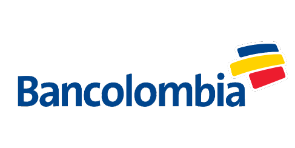
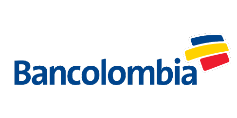

¿Qué es el Ingreso Solidario?
Es un esquema mediante el cual se entrega una
transferencia monetaria en favor de los hogares
en situación de pobreza y vulnerabilidad que
no sean beneficiarios de programas sociales del estado.
Los hogares en condición de pobreza
y vulnerabilidad, afectados en sus
ingresos como consecuencia de la pandemia del coronavirus,
que no hagan parte de los programas sociales
"Familias en Acción", "Colombia Mayor",
"Jóvenes en Acción" y "Devolución del IVA"
podrán acceder a esta medida social.

Etapas de Entrega
Etapa 1
Etapa 2
Etapa 3
Desde el 7 de Abril
9 de Abril al 18 de Abril
18 de Abril al 25 de Abril
Bancos Autorizados
 


Preguntas Frecuentes
1
Yo habia salido como beneficiaria en la primera fase y ahora no aparezco
en el listado de beneficiarios ¿Es decir, ya no recibire el beneficio?
Estamos actualizando el listado de beneficiarios que recibieron el giro.
Si encontro su nombre en la primera etapa y esta plenamente
identificado, no ha perdido su beneficio.
2
¿Por que no aparezco ahora en el listado de ingresosolidario.prosperidadsocial.gov.co?
Estamos actualizando el listado de beneficiarios que recibieron el giro.
Si encontro su nombre en la primera etapa y esta plenamente
identificado, no ha perdido su beneficio.
3
¿Que debo hacer porque me llego el mensaje de que soy beneficiario y no he recibido el pago?
Si usted fue informado de que es beneficiario del programa mediante un mensaje de texto
enviado por la entidad financiera en la cual tiene una cuenta o deposito activo,
comuniquese con esa entidad financiera para averiguar como acceder a los recursos del ingreso solidario.
Si usted no tiene una cuenta o deposito con el sistema financiero, y es elegido
dentro del programa Ingreso Solidario, pronto recibira un mensaje con
las instrucciones para hacer la apertura de una cuenta digital.
4
Consulté en la página web y soy beneficiario, pero aún
no me han llamado ni he recibido mensaje de texto ¿Qué debo hacer?
Si usted encontró su nombre y cédula en la base de beneficiarios y no ha recibido un mensaje de texto,
significa que hace parte
de un ciclo posterior de pagos. Durante esta etapa, las entidades financieras se contactarán con usted
para darle las indicaciones de cómo recibir el giro o hacer la apertura de un depósito simplificado a través
de su celular
5
¿Qué debemos hacer los que somos beneficiarios, pero no tenemos celular o cambiamos de número?
Prosperidad Social está trabajando con diferentes organizaciones y
fuentes de datos para ubicarlo y contactarlo.
Lo invitamos a consultar periódicamente la página.
¿Tienes mas preguntas?
Por favor no dudes en contactarnos para poderte dar la informacion que necesites